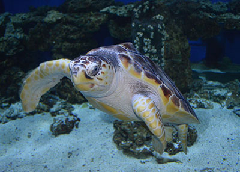
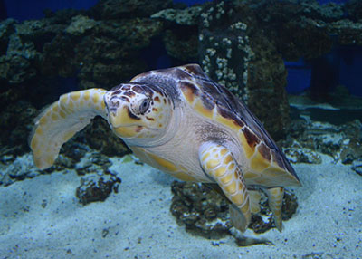
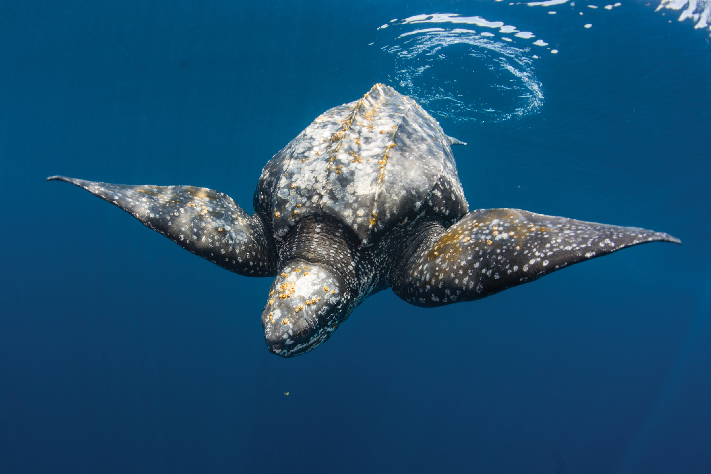
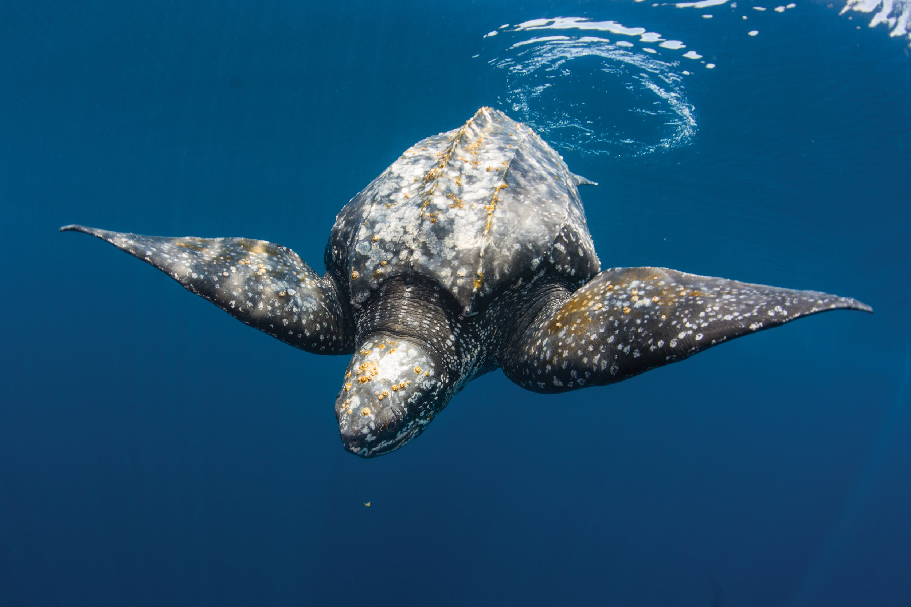

Green Turtle
The Green Turtle (Chelonia mydas), one of the biggest marine turtles ever recorded, is the one that is most frequently spotted in Sri Lanka. It may be identified by its flattened body, which is encased in a tear-shaped shell that is blackish gray in color, a smaller head than the loggerhead turtle, and a pair of enormous flippers that resemble paddles. The average adult turtle weighs between 68 and 190 kg, however, rare species can reach weights of 315 kg. Its name comes from the layers of green-colored fat that are present beneath its shell. They thrive mostly in tropical ocean conditions, eating solely marine plants like algae and sea grass before returning to the beach to lay eggs.


Hawksbill Turtle
The World Conservation Union has listed the hawksbill turtle (Eretmochelys imbricata) as critically endangered due to poaching for its beautiful, commercially valuable "tortoise shell," human consumption of tortoise flesh and eggs, and the turtle becoming entangled in fishing gear. It has a dark golden brown color with reddish orange streaks, and its thick scutes, which make up its hard upper shell, are what make it so unusual. The Hawksbill turtle has a head that is elongated and tapers into a pointed beak that resembles a hawk. It is tiny to medium in size. It primarily lives in shallow lagoons and coral reefs, where it eats sponges, fish, sea anemones, and jellyfish, among other things.


Loggerhead Turtle
The Caretta caretta, also known as the loggerhead sea turtle, has a reddish brown shell with a top shell that resembles a small heart and a sizeable head. A typical adult is three feet long and weighs about 113 kilograms (250 pounds). The females of these marine reptiles briefly come ashore to lay their eggs in bays, lagoons, and salt marshes, although they are primarily found in salt water, often hundreds of kilometers out at sea. Being carnivores, they mostly eat marine invertebrates, particularly crabs with hard shells, which they eat with their mighty jaws. The lifespan of a loggerhead sea turtle is estimated to be 50 years.
 

Leatherback Turtle
The largest extant turtle and the fourth heaviest modern reptile is the leatherback sea turtle (Dermochelys coriacea). It can be identified by its enormous, grayish-black, teardrop-shaped body coated in skin and oily flesh, as well as by the seven noticeable ridges that run along the length of its body from front to back. The leatherback sea turtle can reach a maximum height of seven feet (two meters) and can weigh up to 2000 pounds (900 kg). Its huge pair of front flippers and hydrodynamic body form enable it to swim swiftly through the water, where it primarily feeds on jellyfish and other small marine invertebrates.
 
